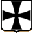

 The Teutonic Knights
History and Grand Masters
Religious and military order founded in the Holy Land during the third Crusade in 1191.
Origins and Organization
To give it its full name, the "Order of the Teutonic Knights of St Mary's Hospital in Jerusalem", the order was originally a simple hospital created by merchants from Bremen and Lübeck during the Siege of Acre (Palestine) in 1191. The Order of the Teutonic Knights was transformed into a military order in 1198 and was officially recognized by the pope in 1199. Closely related to the Curia, it modeled its organization on the Hospitallers of St John of Jerusalem and included the Templars' techniques in its evangelization process. All the members were of German nobility and wore a white cloak decorated with a black cross. The Rule was enacted in 1244 and listed the hierarchical order of the different members (brother-knights, priests and servants), placing them under the authority of a Grand Master. The Grand Master was elected for life and was assisted by five dignitaries: the Grand Commander, the Marshal, the Treasurer, the Hospitaller and the Quartermaster.
Works
In the 13th century, the order was initially established in the Holy Land
before acquiring large swathes of land in the Mediterranean and Germany, where it created
12 bailiwicks intended to finance its expeditions. In 1211, the Teutonic Knights
migrated to Transylvania and founded the city of Kronstadt (Brasov). In 1231, Grand Master
Hermann von Salza responded to the request from Duke Conrad of Mazovia to conquer and
colonize pagan Prussia, with the conquest ending in 1283. The order continued to grow through
mergers (in 1237 with the Livonian Brothers of the Sword) or takeovers (Eastern Pomerania in
1309, Estonia in 1346). In 1329, the Teutonic Knights received the Baltic region stretching
from the Gulf of Finland to Pomerania as a papal fief.
Emperor Frederick II bestowed upon the Order of the Teutonic Knights the status and
privileges granted to the Empire's princes. In 1309, the Order set up its headquarters
in Marienburg (now Malbork, Poland). The knights erected several fortresses, such as in
Marienburg and Golub, Prussia. Similarly, they created 93 cities on their lands
(such as Königsberg, now Kaliningrad).
Fall of the Order
The Teutonic Knights were increasingly challenged from the end of the 14th century and were
defeated at the Battle of Grunwald by Polish King Wladyslaw II Jagiello in 1410, which
put an end to their territorial expansion. Heinrich von Plauen, Grand Master from 1410 to 1413,
attempted to reform the crumbling order, but was soon ousted by the Chapter. The Thirteen Years' War
(1454-1466) between the Poland of King Casimir IV and the Teutonic Knights
ended with the return of all the order's territories to Poland, except for Eastern Prussia
and Livonia, via the Peace Treaty of Thorn (now Torun) in 1466. In addition, the King of Poland
became the overlord of the order's Grand Master for the remaining territories.
In the 16th century, Prussia and Courland were secularized and transformed into dukedoms,
and Livonia was shared between Poland, Russia and Sweden.
The Order of the Teutonic Knights survived in southern Germany and underwent something of a revival
in the fight against the Turks in Hungary.
Disbanded by Napoleon I in 1809, it nevertheless lingered in Austria
during the 19th century. In 1918, it was managed by a priest for the first time ever,
and in 1929, religious discipline was completely restored. Ever since, except during the Second
World War, the Order of the Teutonic Knights (headquartered in Vienna) has been a
charity order, whose actions are limited to Austria, Italy and Germany.
Teutonic Grand Masters Contemporary with the Knights Templar
- Heinrich Walpot, Grand Master from 1198 to 1208
- Otto von Kerpen, Grand Master from 1208 to 1209
- Heinrich von Tunna (called Bart), Grand Master in 1209
- Hermann von Salza, Grand Master from 1209 to 1239
- Konrad of Thuringia, Grand Master from 1239 to 1240
- Gerhard von Malberg, Grand Master from 1241 to 1244
- Heinrich von Hohenlohe, Grand Master from 1244 to 1249
- Gunther von Wüllersleben, Grand Master from 1250 to 1252
- Poppo von Osternohe, Grand Master from 1252 to 1256
- Wilhelm von Urenbach, Grand Master from 1252 to ????
- Hanno von Sangerhausen, Grand Master from 1256 to 1273
- Hartmann von Helbrungen, Grand Master from 1273 to 1282
- Burkard von Schwanden, Grand Master from 1282 to 1290
- Konrad von Feuchtwangen, Grand Master from 1291 to 1296
- Gottfried von Hohenlohe, Grand Master from 1297 to 1303
- Siegfried von Feuchtwangen, Grand Master from 1303 to 1311
- Karl von Trier, Grand Master from 1311 to 1324
- Werner von Orselen, Grand Master from 1324 to 1330
- Luther von Braunschweig, Grand Master from 1331 to 1335
- Dietrich von Altenburg, Grand Master from 1335 to 1341
- Ludolf König von Wattzau, Grand Master from 1341 to 1345
- Heinrich Dusener, Grand Master from 1345 to 1351